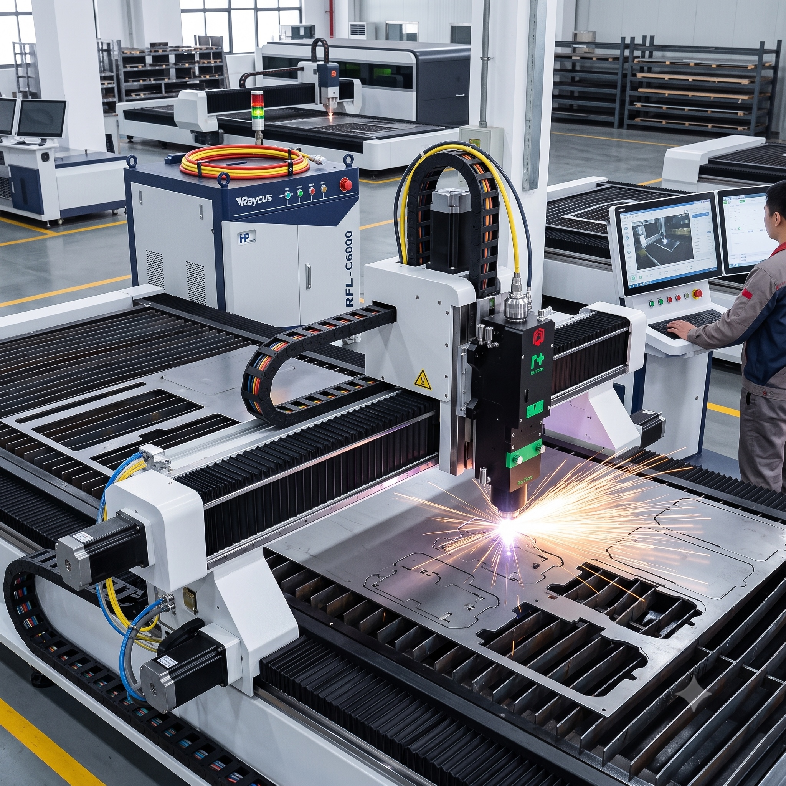

Fiber Lazer Kesim
Çelik, paslanmaz ve alüminyum saclarda hassas kesim. DXF/DWG dosyalarınızla doğrudan üretime geçilir.
- 25 mm’ye kadar sac metal kesim
- Sac büküm ile üretime hazırlık
- Kaynaklı imalat desteği

Raycus 6 kW güç kaynağı, Raytools BM06K kesim kafası ve CypCut Pro kontrol altyapısıyla sac metal kesim süreçlerini hızlı ve hassas şekilde yürütüyoruz.
Ana işimiz fiber lazer kesimdir. Diğer süreçler, kesilen sac parçayı üretime hazır hale getiren tamamlayıcı adımlardır.
Çelik, paslanmaz ve alüminyum saclarda hassas kesim. DXF/DWG dosyalarınızla doğrudan üretime geçilir.
Fiber lazer sonrası sac parçaların abkant bükümle üretime hazır hale getirilmesi.
DetaylarKesilen ve bükülen sac metal parçalar için kaynaklı imalat desteği.
DetaylarDXF, DWG, PDF, STEP veya görsel dosya alınır.
Malzeme, kalınlık ve üretilebilirlik kontrol edilir.
Parçalar hassas kesim parametreleriyle üretilir.
İhtiyaca göre tamamlayıcı süreçler uygulanır.
Ölçü, yüzey ve adet kontrolleri yapılır.
Parçalar üretime veya montaja hazır teslim edilir.